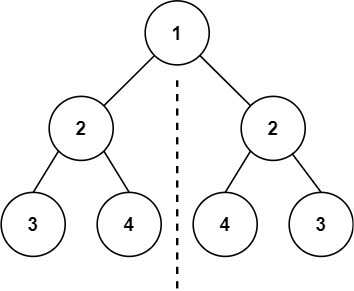
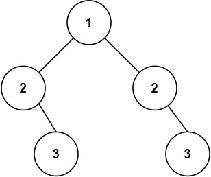

101. 对称二叉树
题目与约束
给你一个二叉树的根节点 root ， 检查它是否轴对称。
示例 1：

输入：root = [1,2,2,3,4,4,3]
输出：true
示例 2：

输入：root = [1,2,2,null,3,null,3]
输出：false
提示：
- 树中节点数目在范围
[1, 1000]内 -100 <= Node.val <= 100
进阶：你可以运用递归和迭代两种方法解决这个问题吗？
核心不变量
成对比较外侧与外侧、内侧与内侧。
解法 1：递归镜像版
思路推导
-
直觉与痛点（单线思维的局限）：
之前我们做二叉树的题，通常是一个指针
curr走天下。但是，判断对称是两个子树之间的较量。你站在树顶往下看，左边的子树要往左偏，右边的子树就得往右偏。单靠一个指针是无法同时比对两边的。 -
破局思路（分身之术：双指针探险）：
我们在根节点的左右两边，同时派出两个探测器：
leftNode和rightNode。判断它们是否是镜像的原则非常简单（只需满足三点）：
- 它们俩的节点值（
val）必须相等。 leftNode的左孩子，必须等于rightNode的右孩子（外侧对比）。leftNode的右孩子，必须等于rightNode的左孩子（内侧对比）。
- 它们俩的节点值（
-
逻辑推演（递归的三大终止条件）：
当两个探测器往下走时，会遇到什么情况？
- 都走到了空节点（
null）：完美，说明走到头了也是对称的，返回true。 - 一个走到了空，另一个还有实体节点：树的结构不对称了！立刻返回
false。 - 都不为空，但是值不相等：数值不对称！立刻返回
false。
Java 实现（递归极简版）
C++ 实现
实现来源：站内标准实现
class Solution { bool compare(TreeNode* left, TreeNode* right) { if (left == nullptr && right == nullptr) return true; if (left == nullptr || right == nullptr || left->val != right->val) return false; return compare(left->left, right->right) && compare(left->right, right->left); } public: bool isSymmetric(TreeNode* root) { return root == nullptr || compare(root->left, root->right); } };Python 实现
实现来源：代码随想录（programmercarl.com）
class Solution: def isSymmetric(self, root: TreeNode) -> bool: if not root: return True return self.compare(root.left, root.right)Go 实现
实现来源：代码随想录（programmercarl.com）
/** * Definition for a binary tree node. * type TreeNode struct { * Val int * Left *TreeNode * Right *TreeNode * } */ // 递归 func defs(left *TreeNode, right *TreeNode) bool { if left == nil && right == nil { return true; }; if left == nil || right == nil { return false; }; if left.Val != right.Val { return false; } return defs(left.Left, right.Right) && defs(right.Left, left.Right); } - 都走到了空节点（
/**
* Definition for a binary tree node.
* public class TreeNode {
* int val;
* TreeNode left;
* TreeNode right;
* TreeNode() {}
* TreeNode(int val) { this.val = val; }
* TreeNode(int val, TreeNode left, TreeNode right) {
* this.val = val;
* this.left = left;
* this.right = right;
* }
* }
*/
class Solution {
public boolean isSymmetric(TreeNode root) {
// 如果树为空，天然对称
if (root == null) {
return true;
}
// 从根节点的左右两个孩子开始，开启双线比对
return check(root.left, root.right);
}
// 辅助函数：专门用来比对两个节点是否呈镜像
private boolean check(TreeNode leftNode, TreeNode rightNode) {
// 终止条件 1：两个节点同时为空，这部分对称，过关
if (leftNode == null && rightNode == null) {
return true;
}
// 终止条件 2：其中一个为空，另一个不为空，结构不对称，淘汰
if (leftNode == null || rightNode == null) {
return false;
}
// 终止条件 3：值不相等，淘汰
if (leftNode.val != rightNode.val) {
return false;
}
// 核心递归：当前节点对比通过了！
// 接下来继续去查：
// 1. 左节点的左孩子 vs 右节点的右孩子（外侧）
// 2. 左节点的右孩子 vs 右节点的左孩子（内侧）
return check(leftNode.left, rightNode.right) && check(leftNode.right, rightNode.left);
}
}
复杂度
- 时间复杂度：O(N)。这里 N 是整棵树的节点数。每次比较消耗 O(1) 的时间，总共最多比较 N/2 次。
- 空间复杂度：O(H)。这里的 H 是树的高度。空间消耗依然是递归系统调用栈的开销。
- 面试追问：“你能用【迭代法（非递归）】实现镜像比对吗？”
- 满分抢答：完全可以！我们只需要借助一个队列（Queue）。
- 思路还原：在最初，我们把根节点的左孩子和右孩子成对地扔进队列。每次循环，我们从队列里连续弹出两个节点进行比对。
- 如果它们匹配成功，我们就把它们的下一代也成对地扔进去。注意放入队列的顺序必须是镜像的：先放左节点的左孩子，紧接着放右节点的右孩子（外侧一对）；然后再放左节点的右孩子，紧接着放右节点的左孩子（内侧一对）。只要能顺利把队列掏空且没报错，这棵树就是对称的！
解法 2：迭代队列版
思路推导
我们使用一个队列（Queue）。在每一轮中，我们都保证相邻出队的两个节点，恰好是需要进行镜像比对的两个节点。
如果它们比对成功，我们就把它们的子节点，按照镜像的顺序（先外侧，后内侧），两两配对地塞回队列的尾部，等待后续的比对。
思路推导
- 初始化：根节点
1不用比，直接把它的左孩子2(左)和右孩子2(右)扔进队列。此时队列：[ 2(左), 2(右) ]。 - 出队比对：从队列头部连续弹出两个节点。它们俩分别是
2(左)和2(右)。- 都不为空？是。
- 值相等？是。比对通过！
- 镜像入队（极其关键）：既然这一层是对称的，那就把它们的下一代安排进队列：
- 先把外侧的一对扔进去：入队
2(左).left，紧接着入队2(右).right。 - 再把内侧的一对扔进去：入队
2(左).right，紧接着入队2(右).left。
- 先把外侧的一对扔进去：入队
- 循环：只要队列不为空，就一直成对弹出比对。如果中途发现任何一对不匹配，直接判定
false。如果队列顺利清空，说明全都匹配，返回true。
Java 实现（队列迭代版）
import java.util.LinkedList;
import java.util.Queue;
/**
* Definition for a binary tree node.
* public class TreeNode {
* int val;
* TreeNode left;
* TreeNode right;
* TreeNode() {}
* TreeNode(int val) { this.val = val; }
* TreeNode(int val, TreeNode left, TreeNode right) {
* this.val = val;
* this.left = left;
* this.right = right;
* }
* }
*/
class Solution {
public boolean isSymmetric(TreeNode root) {
// 空树天然对称
if (root == null) {
return true;
}
// 使用 LinkedList 作为队列（原因看下面考点拓展）
Queue<TreeNode> queue = new LinkedList<>();
// 初始状态：把根节点的左右孩子成对放入队列
queue.offer(root.left);
queue.offer(root.right);
// 只要队列里还有节点，就继续比对
while (!queue.isEmpty()) {
// 每次必须连续弹出两个节点！它们就是需要比对的“镜像对”
TreeNode leftNode = queue.poll();
TreeNode rightNode = queue.poll();
// 情况 1：两个节点都是空的。这部分是对称的，直接 continue 检查队列里的下一对
if (leftNode == null && rightNode == null) {
continue;
}
// 情况 2：其中一个为空，或者两者的值不相等。直接判定不对称！
if (leftNode == null || rightNode == null || leftNode.val != rightNode.val) {
return false;
}
// 情况 3：两个节点匹配成功！将它们的子节点按照“镜像顺序”成对压入队列
// 压入外侧的一对：左节点的左孩子，右节点的右孩子
queue.offer(leftNode.left);
queue.offer(rightNode.right);
// 压入内侧的一对：左节点的右孩子，右节点的左孩子
queue.offer(leftNode.right);
queue.offer(rightNode.left);
}
// 队列顺利清空，没有触发任何 false，说明整棵树完美对称！
return true;
}
}
复杂度
- 时间复杂度：O(N)。每个节点进队一次、出队一次，比较操作是常数时间的，总共耗时与节点数成正比。
- 空间复杂度：O(N)。在最坏情况下（比如树的最底层全满），队列中最多会同时存放大约 N/2 个节点，所以空间复杂度为线性的 O(N)。
- 高级踩坑警告：为什么必须用
LinkedList而不用ArrayDeque？
- 在很多 Java 面试指南中，都会建议大家用
ArrayDeque来代替LinkedList当作队列使用，因为ArrayDeque基于数组，速度更快。 - 但是在这道题里，千万别用
ArrayDeque！ - 原因：我们的逻辑中，会把大量的空节点（
null）强行压入队列中（为了对称地占位）。在 Java 中，LinkedList是允许插入null元素的，但ArrayDeque底层严禁插入null，一旦你执行queue.offer(null)，会直接抛出NullPointerException！ - 如果你一定要用
ArrayDeque，那就必须在每次offer之前加个判断，但这会让代码变得极其臃肿，失去了这种写法的优雅。所以，利用LinkedList能够存储null的特性，是迭代法写这道题的最优解。
- 思想拓展：这到底算 BFS 还是 DFS？
-
虽然我们用了队列（Queue），这看起来像层序遍历（广度优先 BFS）。但实际上，如果你把代码里的
Queue换成Stack（栈，比如Stack<TreeNode>），代码逻辑一个字都不用改，依然能完美运行出正确结果！ -
因为我们关心的不是“一层层遍历”还是“一条道走到黑”，我们真正在乎的只有一件事：只要放进去的那两个节点是挨着的，拿出来的时候它们就一定是用来互相比较的。 容器只负责成对保管，这就是算法中“不拘泥于特定结构”的高级抽象思维！